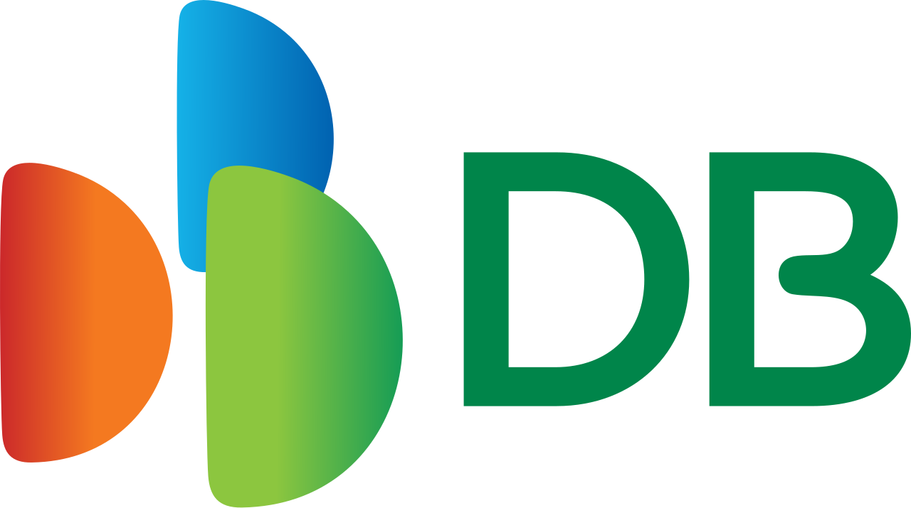

홈 > 브랜드 매거진 > DB손해보험
DB손해보험
DB손해보험(DB Insurance)은 DB그룹 계열의 대형 손해보험사로, 한국 최초의 자동차보험 전문 회사로 출발했다.
산업 분야 브랜드·비즈니스 · 공개 등급 자료 기반 · 브랜드 평가 4.2 ★

한눈에 보는 브랜드
DB손해보험은 1962년 국내 손보사들이 공동 출자한 한국자동차보험공영사로 출발해, 1983년 동부그룹 편입으로 민영화되고 1995년 동부화재해상보험, 2017년 DB손해보험으로 재출범한 손해보험사다. 자동차보험 독점 사업자에서 종합 손보사로 성장해 현재 자산과 이익 규모에서 업계 2위권을 지키며, 2025년 매출 20조원대, 당기순이익 1조5천억원대를 기록한 대형 보험그룹의 핵심 계열사다.
브랜드 관점
DB손해보험의 경쟁 구도는 삼성화재가 압도적 1위를 점한 가운데 DB·현대해상·KB손해보험이 2위권을 다투는 형태다. 차별점은 두 축이다.
첫째, 운전자보험·간편보험 등 장기인보험 포트폴리오에서 선두권 경쟁력을 유지하며 IFRS17 체제에서 수익성 지표인 CSM 확보에 유리한 상품 구성을 갖췄다는 점, 둘째 미국 9개 주와 베트남 3개 손보사 경영권을 확보한 해외 사업으로 국내 동종사 중 가장 공격적인 글로벌 확장을 추진한다는 점이다. 2025년 자동차보험 적자 전환과 보험손익 급감은 손해율 상승이라는 업계 공통 압박을 보여주며, 투자손익 확대로 이를 방어했다.
저출산·고령화로 신규 수요가 위축되는 한국 시장에서 유병자보험과 해외 수익원 다변화가 향후 성장의 관건이다.
시작과 성장
1960년대 초 한국은 자동차 보급이 시작되며 사고 보상 체계가 시급했다. 1962년 국내 손해보험사들이 지분을 공동 출자해 한국자동차보험공영사를 설립한 것이 시초로, 이듬해 자동차 손해배상책임보험을 내놓고 1968년 주식회사로 전환해 한동안 자동차보험 시장을 사실상 독점했다.
첫 전환점은 1983년이다. 동부그룹이 경영권을 인수하며 민영화되고 손해보험 전 종목 면허를 확보해 종합 손보사로 발돋움했고, 1995년 동부화재해상보험으로 이름을 바꿨다.
두 번째 전환점은 2017년으로, 모기업이 DB그룹으로 바뀌면서 DB손해보험으로 사명을 재변경해 새 기업 정체성을 세웠다. 이후 2000년대 이후 미국 진출에 이어 2024년 베트남 손보사를 추가 인수하며 해외 영토를 넓혀 왔다.
브랜드 아이덴티티
DB손해보험의 핵심 가치는 '약속'이다. 이를 의인화한 '프로미(PROMY)' 캐릭터 브랜드로 친근한 신뢰의 이미지를 전한다.
비주얼 아이덴티티는 동부 시절부터 이어진 녹색 계열을 계승하되, B자 내부 흰 도형을 끊지 않고 하나로 연결해 안과 밖을 향한 유연하고 열린 기업 문화를 형상화했다. 타깃은 자동차·건강·재물을 아우르는 폭넓은 개인 가입자와 기업 고객이며, 보이스는 약속을 지킨다는 책임감을 바탕으로 안정감 있고 진중한 어조를 유지한다.
안정적 배당과 우량 재무를 강조하는 신뢰 중심 커뮤니케이션이 브랜드 전반을 관통한다.
제품과 서비스
주력은 세 축이다. 장기인보험(건강·운전자·종합보험 등)이 가장 큰 비중을 차지하고, 자동차보험과 기업·재물 대상 일반보험이 뒤를 잇는다.
여기에 해외 장기체류·유학생보험 등 특화 상품과 미국·베트남 현지 사업을 더했다. 판매는 설계사 조직, 대리점(GA) 채널, 다이렉트 온라인몰, 보험 비교 플랫폼을 병행하며, 모바일 앱 이용자 규모에서도 상위권을 유지한다.
현재 상태
본사는 서울 강남구 테헤란로 DB금융센터에 있다. 지배구조상 김남호 회장 일가가 정점에 있는 DB그룹 계열사로, 지주 격인 DB Inc.를 축으로 한 순환 구조 안에 위치한다.
경영은 정종표 대표이사 체제로 운영되며, 행동주의 펀드 측 인사가 사외이사로 선임돼 이사회 독립성 강화 움직임이 나타났다. 실적은 2024년 당기순이익 약 1조7천억원대에서 2025년 1조5천억원대로 13% 안팎 감소했고, 같은 해 매출은 20조원대로 늘었다.
배당은 보통주 주당 배당금을 매년 높여 왔으며 배당성향 40% 목표를 제시했다. 구체적 시가총액 수치는 미공개.
타임라인
정리된 연도형 이벤트가 없습니다.
BI/CI 변천사
함께 읽을 브랜드
SF
삼성화재
브랜드·비즈니스 · 자료 기반삼성화재삼성화재(Samsung Fire & Marine Insurance)는 삼성그룹 계열의 한국 최대 손해보험사다.
Om
Omy
브랜드·비즈니스 · 편집 검수OmyOmy는 2024년에 기록된 Designed by Wedge 계열의 브랜드 아이덴티티 사례입니다. Wedge가 아이덴티티 작업의 디자이너로 기록되어 있습니다. 로고,...
브랜드·비즈니스 · 자료 기반현대해상현대해상(Hyundai Marine & Fire Insurance)은 1955년 동방해상보험으로 출발한 대한민국의 대형 손해보험회사다.
 브랜드·비즈니스 · 편집 검수Bose
브랜드·비즈니스 · 편집 검수BoseBose는 2024년에 기록된 Designed by Collins 계열의 브랜드 아이덴티티 사례입니다. Collins가 아이덴티티 작업의 디자이너로 기록되어 있습니다...
 브랜드·비즈니스 · 편집 검수Citibank
브랜드·비즈니스 · 편집 검수Citibank씨티(Citi)는 미국 씨티그룹이 운영하는 글로벌 소비자·기업 금융 브랜드로, 1812년 뉴욕에서 출발한 시티뱅크 오브 뉴욕을 뿌리로 한다. 빨강 아치가 워드마크 위...
 브랜드·비즈니스 · 편집 검수Deezer
브랜드·비즈니스 · 편집 검수DeezerDeezer는 2023년에 기록된 Designed by Koto 계열의 브랜드 아이덴티티 사례입니다. Koto가 아이덴티티 작업의 디자이너로 기록되어 있습니다. 공개...
 브랜드·비즈니스 · 편집 검수Huntington Bank
브랜드·비즈니스 · 편집 검수Huntington BankHuntington Bank는 2025년에 기록된 Banking 계열의 브랜드 아이덴티티 사례입니다. Koto가 아이덴티티 작업의 디자이너로 기록되어 있습니다. 공개...
BO
BOC
브랜드·비즈니스 · 편집 검수BOCBOC는 1967년에 기록된 Designed by Wolff Olins 계열의 브랜드 아이덴티티 사례입니다. Wolff Olins가 아이덴티티 작업의 디자이너로 기록...